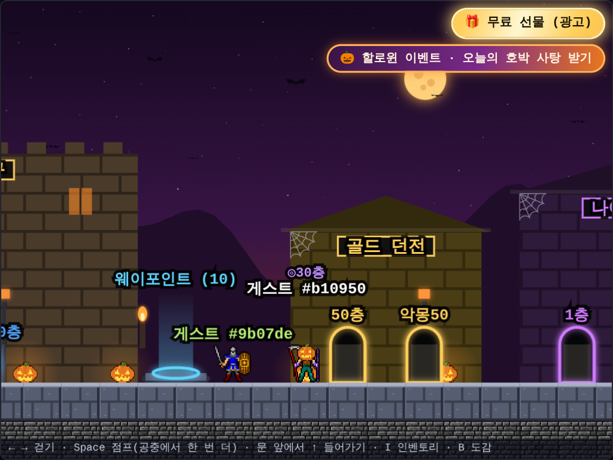
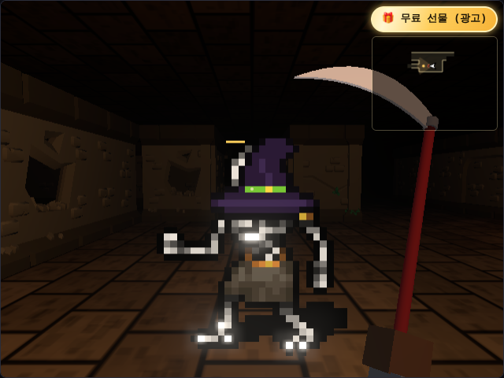
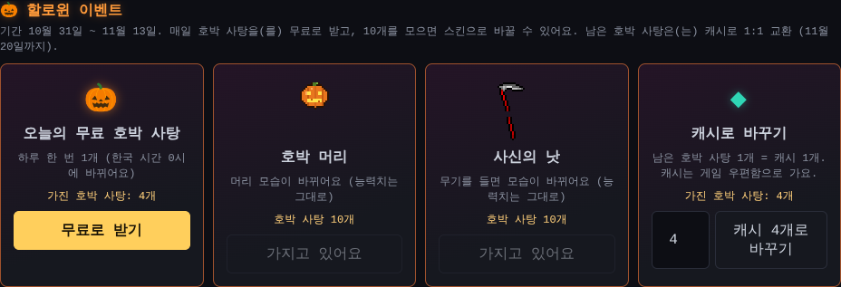

할로윈 이벤트와 1년 이벤트 달력
이번 주 토요일이 할로윈이에요. 게임에도 이벤트가 있으면 좋겠다는 생각이 들어서, 이번에는 할로윈 하나만 만들지 않고 1년 동안 쓸 이벤트 틀부터 만들었어요.
1년 이벤트 달력
먼저 Claude에게 1년 동안 어떤 큰 이벤트가 있는지 물어봤어요. 게임이 한국어·영어·일본어로 나오니까 세 나라의 기념일을 함께 봤어요.
- 할로윈, 크리스마스·새해, 설날, 여름방학, 추석이 1년의 큰 이벤트예요
- 빼빼로데이, 수능, 블랙프라이데이, 밸런타인데이, 화이트데이, 골든위크·어린이날 같은 날도 있어요
이벤트를 2주씩 열면 몇몇은 서로 겹쳐요. 할로윈과 빼빼로데이는 11일, 크리스마스와 새해는 7일, 설날과 밸런타인데이는 7일 차이라서 기간이 겹쳐요. 그래서 큰 이벤트는 한 번에 하나만 열고, 작은 기념일은 그 기간 안에 하루 선물로 넣기로 했어요.
- 할로윈 10월 31일 ~ 11월 13일 (11월 11일 빼빼로데이에는 선물이 하나 더)
- 수능 끝 + 블랙프라이데이, 겨울(크리스마스·새해), 설날(밸런타인데이 포함), 화이트데이, 골든위크·어린이날, 여름, 추석
일정은 모두 넣어 두었고, 내용을 만든 이벤트만 그 날짜에 저절로 열려요. 이번에는 할로윈의 내용을 만들었어요.
할로윈 마을
할로윈 기간에는 마을이 바뀌어요.
- 하늘이 보랏빛에서 지평선 쪽 주황으로 물들어요
- 크고 둥근 주황 보름달이 뜨고, 박쥐가 날아다녀요
- 가로등이 주황 불빛이 되고, 길가에 잭오랜턴이 놓여 촛불처럼 일렁여요
- 건물 처마 밑에 거미줄이 쳐져 있어요

마을 오른쪽 위에는 "🎃 할로윈 이벤트" 배너가 떠요. 누르면 상점의 이벤트 칸으로 가요.
몬스터도 마녀 모자
던전의 몬스터들도 할로윈 기간에는 마녀 모자를 써요. 몬스터마다 그림의 머리 꼭대기를 찾아서 모자를 얹었고, 모자 띠 색은 주황·초록·보라로 돌아가며 달라요. 2D 화면과 3D 화면 모두 그래요. 저승사자처럼 이미 갓이나 왕관을 쓴 몬스터는 그대로 두었어요.

매일 받는 호박 사탕
상점 맨 위에 할로윈 이벤트 칸이 생겼어요.
- 하루 한 번 호박 사탕 1개를 무료로 받아요. 한국 시간 0시에 다시 받을 수 있어요
- 11월 11일 빼빼로데이에는 2개를 받아요
- 호박 사탕 10개로 스킨 하나를 얻어요
- 남은 호박 사탕은 캐시와 1:1로 바꿀 수 있어요. 캐시는 게임 우편함으로 와요
- 스킨과 캐시 교환은 이벤트가 끝나고 1주일 뒤(11월 20일)까지 할 수 있어요

사탕과 스킨, 캐시는 계정에 저장돼요. 그래서 받으려면 게임 계정으로 로그인해야 해요.
호박 머리와 사신의 낫
스킨은 두 가지예요.
- 호박 머리: 머리가 눈과 입이 노랗게 빛나는 호박이 돼요. 투구를 쓰고 있어도 호박으로 보여요
- 사신의 낫: 무기를 들고 있으면 무기 모습이 붉은 자루의 낫으로 바뀌어요. 3D 화면에서 손에 든 무기도 낫이 돼요
스킨은 모습만 바꾸고 능력치는 그대로예요. 얻은 스킨은 인벤토리의 "꾸미기" 줄에 나오고, 누를 때마다 쓰고 벗을 수 있어요. 14일 동안 매일 받으면 사탕이 15개라서, 스킨 하나를 얻고 남은 사탕은 캐시로 바꿀 수 있어요.
테스트로 확인했어요
이벤트는 날짜에 따라 달라지는 기능이라 테스트에서 날짜를 정해 놓고 확인했어요.
- 서버 날짜를 정해 놓고 첫날부터 14일 동안 매일 받으면 15개가 되는지, 같은 날 두 번 누르면 하나만 들어가는지 확인했어요
- 스킨 교환과 캐시 교환을 동시에 두 번 눌러도 사탕보다 많이 쓰지 않는지 봤어요
- 브라우저 시계를 11월 2일로 맞춰서 마을·몬스터 모습, 상점 칸, 꾸미기 버튼, 3D 화면의 낫까지 확인했어요. 10월 30일로 맞추면 아무것도 바뀌지 않아요
다음에 할 것
- 할로윈 이벤트가 끝나면 다음은 수능 끝 + 블랙프라이데이 이벤트예요. 내용을 정해서 같은 틀에 넣으면 돼요